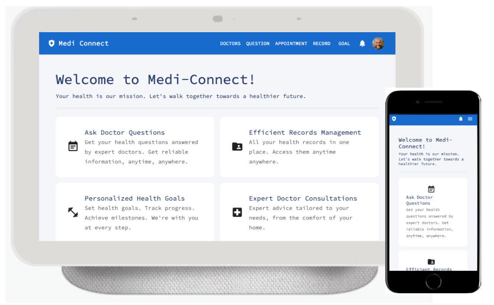

為了成為軟體工程師，做過什麼努力？
專案作品

Tech Stack:
Node.js, Express, TypeScript, PostgreSQL, TypeORM, React,
Material UI lib, Docker, Jest, Swagger

Tech Stack:
Node.js, Express, MongoDB, Mongoose, Handlebars, HTML, CSS,
Bootstrap 4, Font Awesome 5